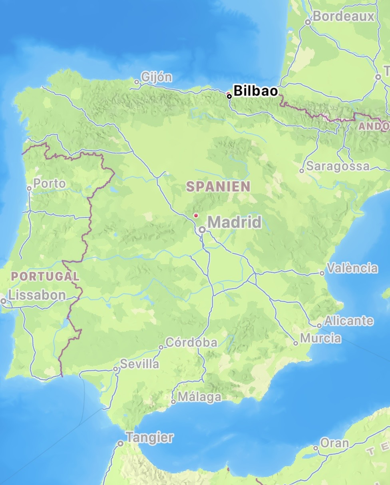

Das Volksfest der Basken
Neun Tage voller Genuss und Freude. In der Hauptstadt des Baskenlandes sind ab Mitte August nicht nur viele
Touristen
in der Stadt zu finden, sondern viele Basken und Spanier sind in der letzen Auguswoche in Bilbao
anzutreffen. Der Grund dafür die Aste Nagusia, das Fest im Baskenland. Aste Nagusia (übersetzt: die Große Woche) ist das Volksfest der Basken. Es werden Neun Tage lang in der
ganzen Stadt verteilt verschiedene Aktivitäten und Veranstaltungen angeboten.
Ab vormittags bis spät in die Nacht sind die Straßen gefüllt. Das Angebot ist groß und ist überwiegend
kostenfrei. Es gibt Konzerte, Tänze, Kochwettbewerbe, Vergnügungsparks für Kinder und vieles mehr. Das neuntägige Fest ist etwas für alle, egal ob klein oder groß. Man trifft auf dem Fest von kleinen Kindern bis
älteren Senioren alle an.
Was ist Aste Nagusia?
Ein kurzer Überblick:
Programm:
Geschichte
Das Volksfest hat seinen Ursprung nach der Franko-Diktatur erlangt und ist von den Dorffesten der Gegend inspiriert. Das erste Mal wurde es im August 1978 gefeiert. Organisiert wird es jedes Jahr von ehernamtlichen Bürgern und Vereinen. Zum Beginn des Festes sammeln sich alle Besucher vor dem Arriaga-Theater, denn von hier aus, wird eine Rakete abgeschossen, die das Fest einleitet. Schon zwei Wochen vorher sieht man alle Vorbereitungen für das Fest über die ganze Stadt hinweg.
Marijaia
Marijaia ist eine Puppe mit der das Fest eingeletet ist. Sie wird wird gezeigt und mit dem Zeigen der Puppe beginnt das Fest und alle Aktivitäten die damit einhergehen. Die Puppe wurde von der Künstlerin Mari Puri Herrero. Der Name Marijaia bedeutet übersetzt die Herrin des Festes und mit ihrer Verbrennung endet traditionell das Fest jedes Jahr. Die Puppe ist 4 Meter groß und ist "das Gesicht" des Festes. Sie symbolisiert Tanz, Lebensfreude und Feierlaune. Sie ist inspiriert von der Mari, der obersten weiblichen Gottheit in der baskischen Mythologie.
Feuerwerk
Für die ersten acht Tage des Festes, kann man abends ab 22:30 Uhr das Feuerwerk genießen. Anschauen kann man es sich von vielen guten Plätzen entweder bei Guggenheim Museum oder direkt bei der Brücke nach Casco viejo.
Das besondere an dem Feuerwerk ist, dass in dem Rahmen des Festes ein interationaler Wettbewerb läuft. Somit treten von Abend 1 bis 7 verscheidene Pyrotechnik-Teams an und die Zuschauer können das Feuerwerkspektakel genießen. Die Zuschauer können zudem eine Stimme abgeben, wer das beste Feuerwerk gezeigt hat und der Gewinner gewinnt den Puplikumspreis.
Es ist ein großes Spektakel, was jeder genießen kann und schön anzusehen ist. Das besondere hierbei ist, dass es so ausgerichtet ist, dass die Besucher des Fesstes kostenlos alle Feuerwerk Exhibitionen sich anschauen können.- Wann: Immer um 22:30 Uhr (für die ersten acht Tage)
- Wo: Am Hang von Mallona
- Dauer: 20 Minuten
Bilbao

Bilbao ist die Hauptstadt des Baskenlandes. Sie gehört zu einer der größten Städte Spaniens. Das Baskenland ist ein autonomer Teil Spaniens, der sich über den Norden erstreckt. Es ist eine kulturell vielfälltige Stadt von der die Berge mit schönen Wanderwegen gleich neben an sind, ebenso das Meer. Die Gegend rund um Bilbao herum ist für die guten Surfmöglichkeiten sehr bekannt und beliebt. Ein guter Ort hierfür ist Getxo.
- Lage: Nordspanien
- Einwohneranzahl: 348.089
- Verein: Atletico Bilbao
- Berge: Mount Artxanda
- Besonderheiten: Guggenheim Museum, die Altstadt, die Pintxos-Kultur
Galerie